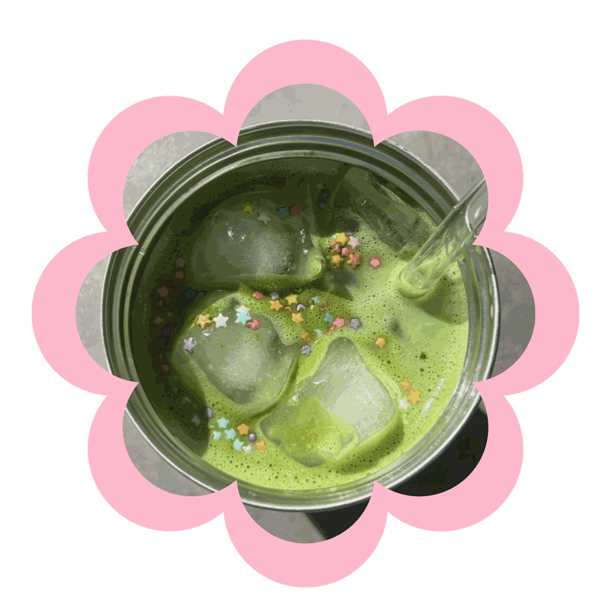

Pixie Matcha

All About Whimsy
At Fairy Cooking, we believe food can be more than something we make and eat. It can be an experience, a memory, or even a little piece of another world. The Whimsy Kitchen is where we take familiar recipes and give them a touch of magic.